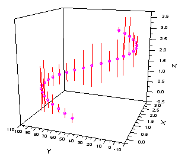

3D散布図＋エラーバー
3D-ErrBars
- 
要求されるデータ
- ワークシート：ワークシートから4列を選び、列値をXYZZと設定します。
または
- 行列：同じ行列シートに2つの行列オブジェクトを準備します。散布図データを含む行列オブジェクトをアクティブにします。
グラフ作成
行列シートをアクティブにするか必要なデータをワークシート上で選択します。
ワークシートデータの場合、メニューからを選択し、行列データの場合、を選択します。
または、
「3Dおよび等高線グラフ」ツールバーの3D散布図＋エラーバーボタンをクリックします。
テンプレート
ワークシート
- gl3DERROR.OTP (OpenGL)
- 3DERROR.OTP
行列
- gl3DSCATTERMATERR.OTP (OpenGL)
- 3DSCATTERMATERR.OTP
(Originのプログラムフォルダにインストールされています。)